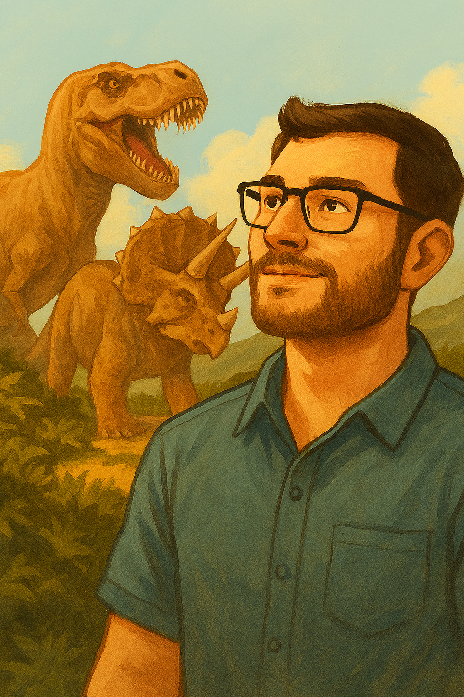

El Explorador de Tiempos Prehistóricos
Domingo
Sobre mi
Desde que tengo memoria, mi mente ha estado poblada por las criaturas más fascinantes que jamás hayan existido: los dinosaurios. Mi nombre es Domingo, y soy un apasionado aficionado a la paleontología y a todo lo relacionado con el mundo prehistórico. Mi fascinación por los dinosaurios va más allá de los fósiles y los esqueletos. Me sumerjo en laera Mesozoica, imaginando la vida de criaturas colosales como el Tiranosaurio rex y el Triceratops, sintiendo la emoción de sus batallas y la majestuosidad de su existencia. No solo me maravillo con su tamaño, sino con la complejidad de sus ecosistemas y la historia que dejaron grabada en la tierra. En esta página web, quiero compartir mi pasión. Aquí encontrarás datos curiosos sobre mis dinosaurios favoritos, información sobre las últimas investigaciones paleontológicas y, quizás, algunas de mis propias ideas sobre cómo era la vida en ese asombroso período. Te invito a unirte a mí en este viaje a través del tiempo. Si, como yo, crees que la historia de la Tierra es mucho más emocionante de lo que nos cuentan, estás en el lugar correcto.